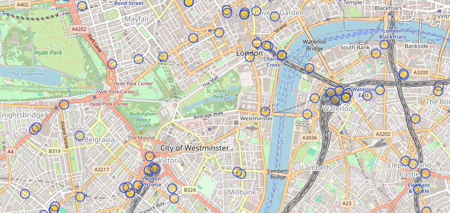
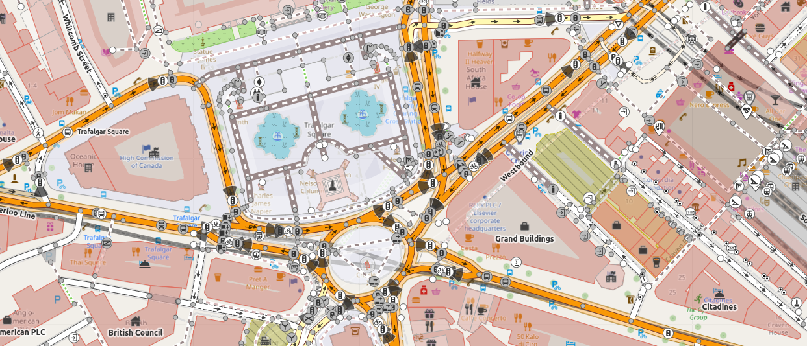

In the eternal words of The Thick of it, everything that happens in the world has to happen somewhere. It sounds obvious, but so many good pieces of research or analysis forget just how much where you are matters…and that’s why, this christmas, I’ve spent an inordinate amount of time contributing to Open Street Map.
I still remember when I first got really excited about OSM - we were doing some analysis on how to identify a town centre, and needed data on where every single cash machine in the capital was. Now, that’s a tough problem - banks move them pretty regularly, so short of asking them (or paying Mr and Ms Google), it’s actually a pretty thorny problem to get to the bottom of. Unless you just ask OpenStreetMap, in which case up to date, surprisingly high-quality data is only an API call away.

But OSM isn’t some flashy, perfect effort by some faceless corporation: it’s entirely open-souce, with each ATM, building, fire-hydrant and tree painstakingly placed by evvery day people like you…and me. I’m aware I could just use Google Maps for so much of this stuff, and I risk coming across as some ageing techno-hippy, but I honestly think what the OSM community have achieved is one of the great wonders of the internet - wonderful mapping, available to all for everything from day to day navigation to humanitarian aid, a communal effort rivalling Wikipedia at a fraction of the cost.
And the final cherry on top? Contributing to OSM is fun. I’ve always loved efforts to gamify moving through the real world (from Pokemon Go to Zombies, Run!). So if you’re looking for some wholesome Christmas fun that will get you moving, and contribute to some real good, try making a few contributions.

In case I’ve inspired you, here are the tools I found really got me started:
- StreetComplete - the easiest, smoothest, most gamified OSM experience you can get. This whole app is honestly delightful - just open it up as you walk around, and I’ll guarantee you’ll feel like you’ve achieved something useful in only a few minutes.
- EveryDoor - If you’ve played with StreetComplete, and feel ready to step it up a notch, this app is a great way to get most of the detail of OSM without too much friction.
- The full OSM editor! Honestly, I spent so long feeling like the proper editor wasn’t for me - I’m a newbie enthusiast, not a surveyor - but honestly, I could not have been more wrong. There’s an interactive tutorial and everything.
So this Christmas, why not do some good, and go map some stuff!